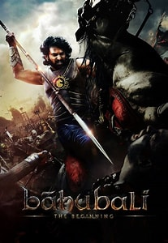

My favourite subject is math ,scince and social. In math it is so fun to learn the formulas and new topics . scince is one of my favourite subject. It is fun to learn about the new things like human body and animals. One of my favourite topic in scince is nervous system and brain. And the other favourite subject is social. We learn about new things like the earth. And many such thing like weather and climate and the history about our ancentors.
My favourite movies are bahubali,spider man 2 dc flash, the end game , sonic the hedgehog, iron man 2, the lion king,dora in the lost golden city, kalki, salar , hi nana,bheema,spider no way home, spider man far from home.
